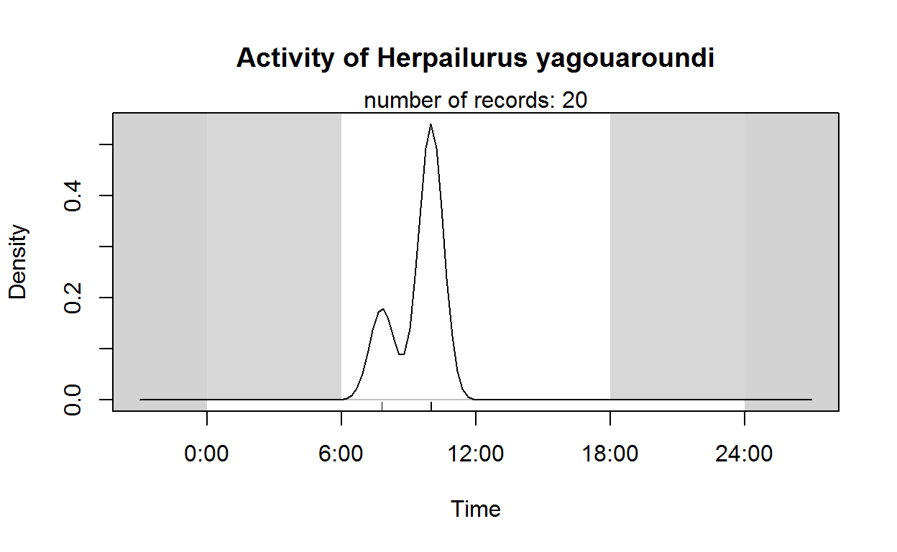

Descripción
Es más grande que un gato doméstico, con cráneo y cara muy similares a los del puma (Puma concolor). Presenta dos formas en la coloración de su pelaje: una de color castaño rojizo, y otra parda casi negra o grisácea. Este felino alcanza una longitud de 50 a 70 cm de largo, más la cola que mide de 30 a 60 cm. Mide en promedio 33 cm de altura.
Detalles de Wikipedia
https://es.wikipedia.org/wiki/Herpailurus_yagouaroundi
Mapa de distribución
Herpailurus yagouaroundi
Grafica actividad
Escondite
Foto

Información de la sesión en R.
R version 4.2.2 (2022-10-31 ucrt)
Platform: x86_64-w64-mingw32/x64 (64-bit)
Running under: Windows 10 x64 (build 14393)
Matrix products: default
attached base packages:
[1] stats graphics grDevices utils datasets methods
[7] base
other attached packages:
[1] plyr_1.8.8 mapview_2.11.0 tmaptools_3.1-1 tmap_3.3-3
[5] raster_3.6-14 sp_1.6-0 camtrapR_2.2.0 sf_1.0-9
[9] lubridate_1.9.2 forcats_1.0.0 stringr_1.5.0 dplyr_1.1.0
[13] purrr_1.0.1 tidyr_1.3.0 tibble_3.1.8 ggplot2_3.4.1
[17] tidyverse_2.0.0 readr_2.1.4
loaded via a namespace (and not attached):
[1] nlme_3.1-160 satellite_1.0.4
[3] overlap_0.3.4 bit64_4.0.5
[5] webshot_0.5.4 RColorBrewer_1.1-3
[7] tools_4.2.2 RcppNumerical_0.4-0
[9] bslib_0.4.2 utf8_1.2.3
[11] R6_2.5.1 KernSmooth_2.23-20
[13] DBI_1.1.3 mgcv_1.8-41
[15] colorspace_2.1-0 withr_2.5.0
[17] tidyselect_1.2.0 leaflet_2.1.1
[19] secr_4.5.8 downlit_0.4.2
[21] bit_4.0.5 compiler_4.2.2
[23] leafem_0.2.0 cli_3.6.0
[25] sass_0.4.5 scales_1.2.1
[27] classInt_0.4-8 proxy_0.4-27
[29] systemfonts_1.0.4 digest_0.6.31
[31] svglite_2.1.1 rmarkdown_2.20
[33] base64enc_0.1-3 dichromat_2.0-0.1
[35] pkgconfig_2.0.3 htmltools_0.5.4
[37] highr_0.10 fastmap_1.1.0
[39] htmlwidgets_1.6.1 rlang_1.0.6
[41] rstudioapi_0.14 jquerylib_0.1.4
[43] generics_0.1.3 jsonlite_1.8.4
[45] vroom_1.6.1 crosstalk_1.2.0
[47] distill_1.5 magrittr_2.0.3
[49] s2_1.1.2 Matrix_1.5-3
[51] Rcpp_1.0.10 munsell_0.5.0
[53] fansi_1.0.4 abind_1.4-5
[55] lifecycle_1.0.3 terra_1.7-3
[57] stringi_1.7.12 leafsync_0.1.0
[59] yaml_2.3.7 MASS_7.3-58.1
[61] grid_4.2.2 parallel_4.2.2
[63] crayon_1.5.2 lattice_0.20-45
[65] stars_0.6-0 splines_4.2.2
[67] hms_1.1.2 leafpop_0.1.0
[69] knitr_1.42 pillar_1.8.1
[71] uuid_1.1-0 stats4_4.2.2
[73] codetools_0.2-18 wk_0.7.1
[75] XML_3.99-0.13 glue_1.6.2
[77] evaluate_0.20 leaflet.providers_1.9.0
[79] data.table_1.14.8 RcppParallel_5.1.6
[81] vctrs_0.5.2 png_0.1-8
[83] tzdb_0.3.0 gtable_0.3.1
[85] cachem_1.0.7 xfun_0.37
[87] lwgeom_0.2-11 e1071_1.7-13
[89] class_7.3-20 viridisLite_0.4.1
[91] memoise_2.0.1 units_0.8-1
[93] timechange_0.2.0 brew_1.0-8
[95] ellipsis_0.3.2